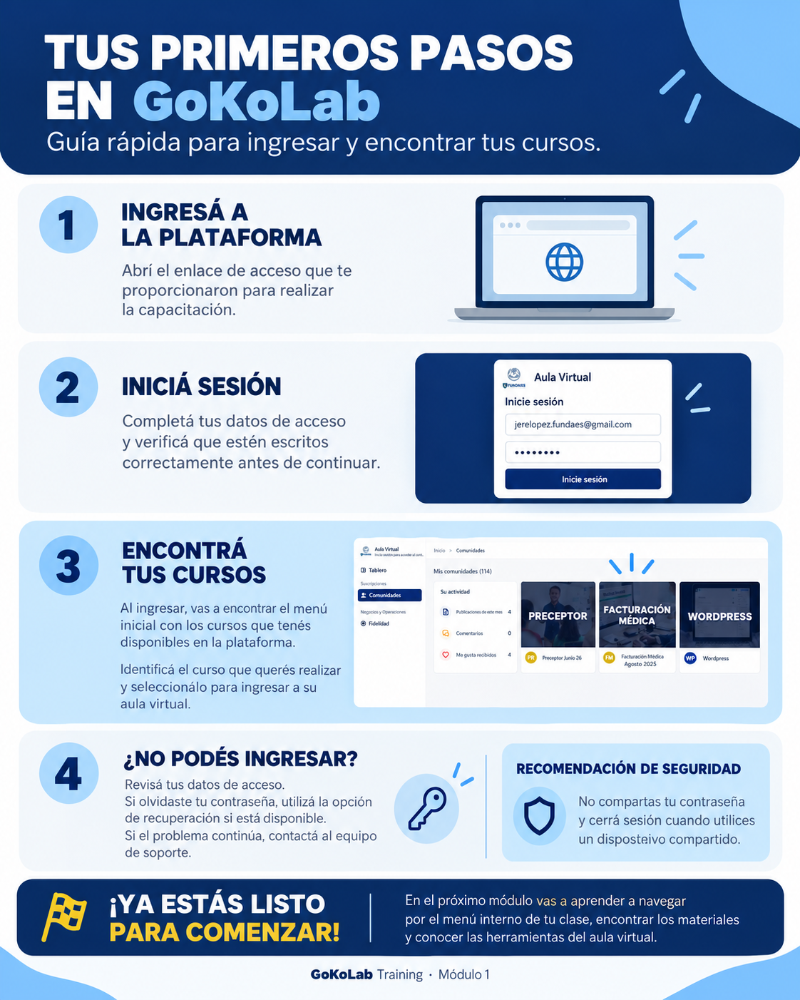

MÓDULO 01
Conocé GoKoLab y accedé al aula
Familiarizate con la plataforma, aprendé a ingresar y conocé las opciones para mantener segura tu cuenta.
RegistroInicio de sesiónSeguridad
En esta guía vas a aprender a ingresar a tu cuenta, encontrar tus clases, completar cuestionarios, entregar tareas y seguir tu progreso. Avanzá a tu ritmo y volvé a consultar cada tema cuando lo necesites.
Completá los módulos en orden para conocer todas las funciones principales.
Familiarizate con la plataforma, aprendé a ingresar y conocé las opciones para mantener segura tu cuenta.
Ubicá las secciones principales, reproducí clases y encontrá los materiales que acompañan cada tema.
Practicá cómo responder cuestionarios, entregar trabajos, revisar calificaciones y comunicarte.
Tené a mano tus datos de acceso y dedicá unos minutos a cada tema. Mirá el video, consultá la infografía, practicá los pasos y completá el cuestionario para comprobar lo aprendido.
Una guía creada para acompañarte en tus primeros pasos dentro del aula virtual.
Somos estudiantes de 4.º año de Ingeniería en Sistemas de la Universidad Tecnológica Nacional, Facultad Regional Córdoba. Desarrollamos esta capacitación en el marco de la cátedra Comunicación Multimedial en el Desarrollo de Sistemas de Información.
Buscamos explicar cada paso de manera clara, práctica y cercana. La idea es que puedas avanzar a tu propio ritmo, repasar los contenidos y resolver dudas mientras conocés la plataforma.
Estudiantes que llevaron adelante este proyecto.
Aprendé cómo ingresar a la plataforma, acceder a tu cuenta y resolver inconvenientes comunes de inicio de sesión.
Una guía visual para consultar cuando necesites volver a entrar o encontrar tus cursos.

Descargar infografíaPara comenzar, utilizá el enlace de acceso que recibiste y seguí el procedimiento indicado para tu cuenta. Después, iniciá sesión y buscá los cursos que tenés disponibles.
Conocé la organización del aula virtual, cómo encontrar tus clases y dónde consultar materiales complementarios.
Consultá los 4 pasos con capturas reales de GoKollab: comunidad, Conversación, Aprendizaje y archivos adjuntos dentro de la clase.
Desde Mis comunidades, ingresá a tu curso. La pestaña Conversación muestra avisos y publicaciones; en Aprendizaje encontrás los contenidos y clases disponibles.
Aprendé a completar cuestionarios, entregar trabajos y consultar la información sobre tu desempeño y comunicación académica.
Cuatro pasos ilustrados para repasar el video cuando lo necesites.
En GoKollab, las entregas se realizan desde la publicación indicada en Conversación, mientras que las evaluaciones se encuentran en Aprendizaje. Seguí siempre la consigna de tu docente.
Consultá el estado de los tres módulos de esta capacitación en este dispositivo.
Completá cada cuestionario para actualizar tu progreso.
Este prototipo guarda el progreso en el almacenamiento local de este navegador. No envía resultados a docentes ni sincroniza entre dispositivos. Para registrar el avance real de cada alumno se necesita una integración con un sistema de usuarios y una base de datos.